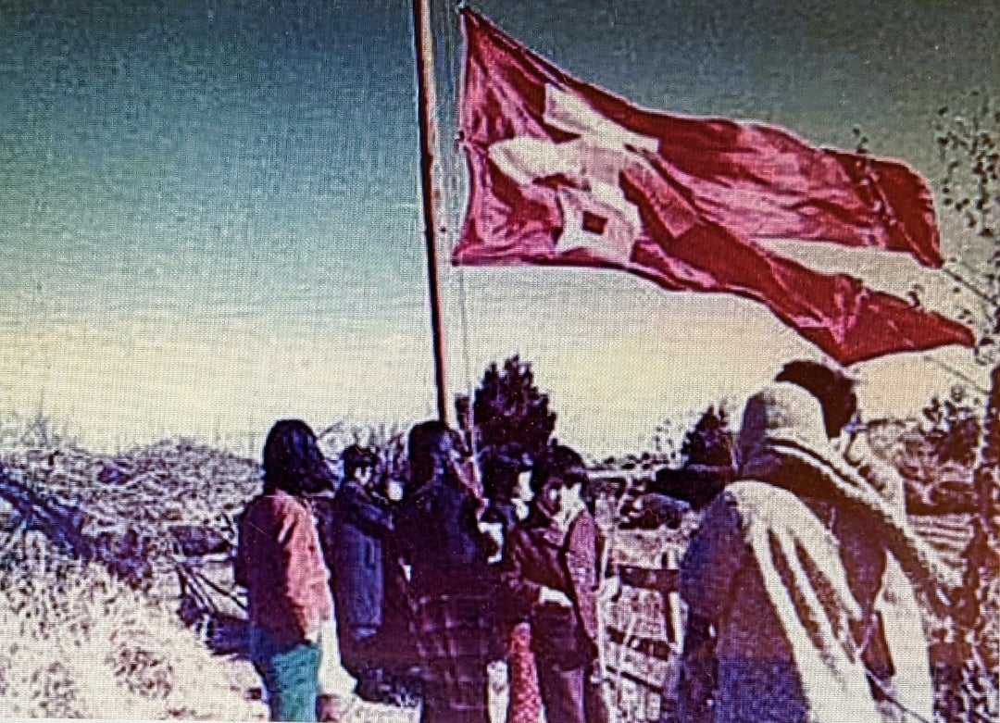
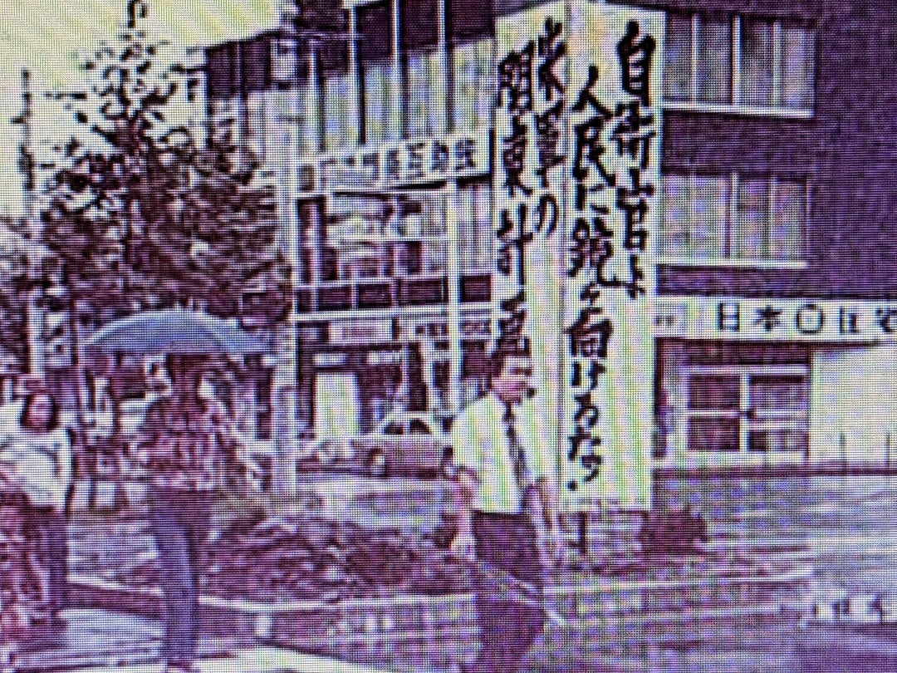

自衛隊強行移駐から50年――基地の町の市民運動
この「砂川平和ひろば」ブログでは 2022年3月の開設当初から
砂川闘争の歴史 その法廷闘争としての側面 さらに
米軍基地返還後の土地利用について 一連の記事を投稿してきました。
米軍基地の拡張中止が発表されたのが1968年
翌1969年には 立川基地からの飛行部隊撤退も決定し
砂川での基地拡張反対闘争は 「勝利」したのでした。
1973年1月に日米両政府は 関東地域に散在する米軍基地を
横田基地に統合する計画（関東計画）に合意し
立川でも 跡地利用をめぐる協議が具体化するはずでした。
ところが 実は1972年に 自衛隊が元米軍基地内への移駐を強行していたのです。
これについて 本ブログ5月5日付「裁判闘争 その後(2)」と題する記事では
「その後の土地利用計画は
自衛隊ありきの既成事実を追認するものとして始まらざるを得ませんでした」
と書きました。
裁判闘争 その後 (2)
しかし 「三分割・有償処分方式」という公的な手続きの陰で
その土地利用案が進められる以前から
自衛隊の移駐に反対する立川市民と
軍事基地の存在そのものに反対する砂川基地拡張反対同盟の有志とが
共に闘う運動が始まっていました。
それこそが 「今につづく砂川闘争」であり
自衛隊の強行移駐から50年目にあたる今年
「（第二次）砂川事件」の国家賠償訴訟や
沖縄返還後ますます負担の大きくなる沖縄の米軍および自衛隊基地問題
などとリンクさせて 今をとらえ直すために
あらためてふり返るべきテーマだと考えます。
「裁判闘争 その後(2)」で予告したとおり
以下の記事は 加藤克子さんが2015年に書いた論考
「今につづく砂川闘争」について より詳しく紹介するものです。
ただし 米軍基地拡張予定地として国に買収された砂川の土地が
計画の中止によって放置されていたのを 地元住民が有効利用した経緯に関しては
「裁判闘争 その後(2)」のなかで 当事者としての加藤さんの言葉を引用しました。
なので ここでは「今につづく砂川闘争」のなかの
自衛隊の強行移駐に関する記述や
それに対する加藤さんたちの闘いの記憶を中心に まとめてみます。
必要に応じて事後的に追加した情報は 〔 〕に示します。
加藤克子「今につづく砂川闘争」
『ピープルズ・プラン』(70):2015.10, 71-79頁
自衛隊移駐反対運動と自衛隊監視テント村
1970年頃「立川基地に自衛隊がやってくる」との情報がもたらされた。反対する市民団体が次々とつくられ、そのなかで、後々「軍事基地を拒否する 自衛隊を拒否する 一人一人の否の会（ひのかい）」にまとまっていく動きが生まれる。そして、この運動の最初の学習会に招かれたのが、砂川基地拡張反対同盟・行動隊副隊長の宮岡政雄だった。

テント村の前身団体「否の会」
{kind=link}
〔しかし、1972年3月7日深夜から8日朝にかけて、防衛庁は米軍立川基地への自衛隊移駐を強行する。立川市（当時は革新市長）への事前通告もなく、抗議の市民の声も無視した暴挙だった。〕
自衛隊移駐後も反対運動は継続した。宮岡は、1972年5月「否の会」が立川基地の滑走路の延長上（反対同盟の一員だった人の農地の一角）に、高さ8メートルの反戦旗を立てるために取り計らい、また同年12月末、自衛隊本隊強行進駐に反対するデモが行われた際、砂川町基地拡張反対同盟の旗を掲げて現れるなど、反対運動を支援し続けた。
{kind=link}
団地住民が参加したという立川市内での市民デモ
写真はいずれも1972年ころの撮影 （「立川自衛隊監視テント村記録写真館 70年代」より）
自衛隊監視のために「小屋」を作って反対していたテント村は、その連絡会がやがて単一の団体となり、新たな闘いを模索した。ベトナム反戦の若者や無党派の学生も加わり、テント村の「小屋」を改修して監視を継続し、自衛官に向けた反軍放送も開始した。さらに、基地正面前には反戦広告塔を建設した。
{kind=link}
初期のテント村（1973年ころ）
{kind=link}

立川駅前の反戦広告塔建設(1973年ころ）と 完成した塔
{kind=link}
こうした反対運動は、基地の町の暴力性に曝され続けた。反軍放送局を兼ねた小屋は1975年に、不審火により焼失した。反戦広告塔は1メートル四方の高さ4メートルという規模だったが、何度か破壊されたり黒く塗りつぶされたりした。
それでもテント村は活動を続けた。小屋が放火された後は宣伝車を使って基地正面前で反軍放送を復活させた。反戦広告塔が被害を受けるたびに修復・補強をくり返し、ついにコンクリート詰めの重量級にまで増強した。しかし米軍の基地返還式直前、1977年秋の深夜、その頑強な塔は、何者かによって根元から引き倒された。
自衛隊は「三年間の暫定使用」と偽り、そこに居座り続けた。旧陸軍／元米軍基地内の老朽化した施設を整備し基地面積を縮小しながらも、新鋭の自衛隊基地建設が進められた。その新滑走路の北端にあたる農地の一角に、1979年2月、テント村のよびかけで15メートルの反戦旗ポールが建設された。その農地は反対同盟の農家の所有地だった。
三多摩一円の労働者・市民・学生が集まって、六畳の大きさの反戦旗を掲げる鉄塔が立ち上がった。
1981年には、基地南に新築されたマンションの最上階の一区画を購入し、放火で失った拠点を回復した。北側のベランダから望遠鏡で見ると、はるかに反戦旗が見える位置だった。
その反戦旗はたびたび新調し、台風が近づけば降ろしに駆けつけた。鉄製のポールは曲がれば補修して延長した。それは1998年冬まで続いたが、その後用地提供者の都合を受け入れて、自主的に撤去し、それを守り続けた人々が砂川に残ることを決意した。
「否の会」の活動記録は1973年に『否 立川闘争の記録 1972～1973』としてまとめられ、非売品として出版された。この小冊子は31ページにわたる写真を含み、以下の内容となっている。
立川闘争年誌
闘争日誌
一月～二月住民登録拒否闘争をめぐって
3・18全国住民運動総決起集会
3・25立川闘争総決起集会（共同闘争と党派の問題）
私たちは軍事基地を拒否しつづける（自衛隊監視テント村存続をめぐって）
写真構成（提供・町田猛）
編集後記
テント村の活動は継続しており、以下のサイトで活動紹介や過去の弾圧事件との闘いの記録などを読むことができる。
自衛隊の時代の裁判闘争と日常化する小さな活動
自衛隊は四次防を経て沖縄にも進駐し、軍隊としての体裁を整えつつあった。米軍は1973年に「関東計画(KPCP)」が合意されるや、関東平野にある在日米空軍施設を横田基地に集約していった。返還された米軍基地には 代わって自衛隊が入る――これが一般的だった。
〔1972年2月に閣議決定された四次防（第四次防衛力整備五カ年計画）には、沖縄の施政返還に伴い自衛隊が沖縄の防衛を担当することが明記された。四次防は1970年1月に防衛庁長官に就任した中曽根康弘の影響下、自民党内の「自主国防」論を反映して、陸・海・空自衛隊の強化と士気高揚、装備の国産化などをめざすものだった。〕
土地収用に抵抗した砂川でも、「米軍だけでなく自衛隊にも反対するのか」という議論があったという。反対同盟を率いた砂川町の宮崎伝左衛門町長は1962年に死去し、町長選挙では革新系が敗北し、1963年には砂川町は立川市に合併されていた。
砂川闘争の勝利で良しとするか、軍事基地のある限り闘い続けるのか――そのような認識の違いを抱え、米軍から自衛隊の時代へと移り変わる時代の裁判として、まず砂川闘争中の訴訟の和解があった。
砂川闘争の初期に、米軍基地内の農地を所有する8名の反対同盟員が原告となって賃貸借契約の更新を拒否し「基地内民有地明け渡し請求訴訟」を起こした。それが、原告に有利な条件で和解が成立した。国としては、米軍からの返還前に決着しておきたい裁判だったにちがいなく、「原状に復して返還する」「その農地までの自由に出入りできる通行権を保証する」「返還までの賃借量相当額を支払う」など、勝利に等しい内容だった。
しかし、この裁判を担ってきた宮岡政雄は、この決着に不服だったという。以下の問題点を究明できなかったからである。
① 民法604条の定める契約期間以後の米軍基地使用の根拠は何か
② 米軍と自衛隊の共同使用、さらにその後の自衛隊の使用・占用の法的根拠は何か
それらに対する回答を得るまで闘えなかったことを、宮本は、最後まで悔やんでいた。
それでも、和解で返還された基地内民有地は、三多摩労協の人々によって植えられた木々が茂り、今では森に成長している。
1976年、大蔵省は基地返還後の跡地利用を「三分割・有償方式」で行うと発表した。跡地を地元・国・保留地に三分し、有償で払い下げる、というものである。
既に「三年間の暫定使用」と偽って自衛隊が立川基地に入っているのであり、先のことなど守られるはずもなかったが、立川市では三年後を目標に「平和利用案」づくりが行われた。それを話し合う市の委員会では、保守系委員が「科学の進歩は日進月歩だ。爆音のない飛行機だってきっとできる」などと発言していた。「立川競輪のもうけで立川基地を買う。買った基地に大きな競輪場を作って今度は横田基地を買おう」などと発言する者もいたという。
結局、立川基地は「広域防災基地」という名のもとに自衛隊基地強化がはかられていった。航空自衛隊の輸送機C-1ジェットの飛来も、予定されていた。
1982年10月以来、C-1ジェットのローパス訓練が毎月実施されたが、1983年4月、C-1ジェットが三重県菅島で墜落し、乗員4名全員が死亡するという事故が起きた。航空法では300メートル以下の低空飛行を禁じているにもかかわらず、濃霧のなか高度180メートルで飛行して、山頂に激突した事故だった。
同年7月18日、砂川の反対同盟とテント村からそれぞれ１名、計2名が連名で、「C-1ジェット飛来差し止めの仮処分申請」を八王子地裁に提出した。その際の陳述書には、砂川空襲の悲惨なありさまが記され、騒音被害の深刻さも訴えられたが、その後、C-1ジェットの着陸訓練が始まり、裁判は終わった。
しかし月1回のC-1ジェット飛来反対デモは、テント村の日常活動として継続された。基地付近を通って立川駅までを歩く小さな小さなデモは、反戦のシンボルを守り自衛隊を監視する活動などとともに、基地の町の日常風景として定着していった。
{kind=link}
「今につづく砂川闘争」が掲載された『ピープルズ・プラン』(70):2015.10, 72頁の写真
1972年「否の会」の反戦旗を立てた記念撮影
12月 私たちは テントをたてた
巨大な基地に むかい ふきさらしの 荒涼とした地に
テントは 人間の生命の あかし として 灯をともした
自衛隊を 阻止するために――
1月 私たちは 小屋を たてた
その昔 人々は 米軍を「進駐軍」と呼んだ
基地からの 飛行機は 朝鮮へ ベトナムへ 飛んだ
今また 基地からのヘリコプターが 飛ぶ――アジアへ 人々の頭上に
小屋は 抵抗の あかし として 灯を ともし続ける
「移駐軍」＝自衛隊を たたき出すために
2月 私たちは 旗を たてた
私たちと 自衛官 一人一人が 自由な人間となるために
3月 私たちは 砂川の 国民有地を たがやした
4月 私たちは その畑に ひなげしの 種をまいた
ひなげしは かつて 国家や民族の 名の下に
いわれなく殺された 人々の 血の色に 咲く
（チェコで ポーランドで ベトナムで 沖縄で そして今も……）
私たちは 人々が 再び 故なく 他の人間を 殺すことを
拒否し ひなげしを さかせる
ひなげしは 基地の 金網を こえて 咲くだろう